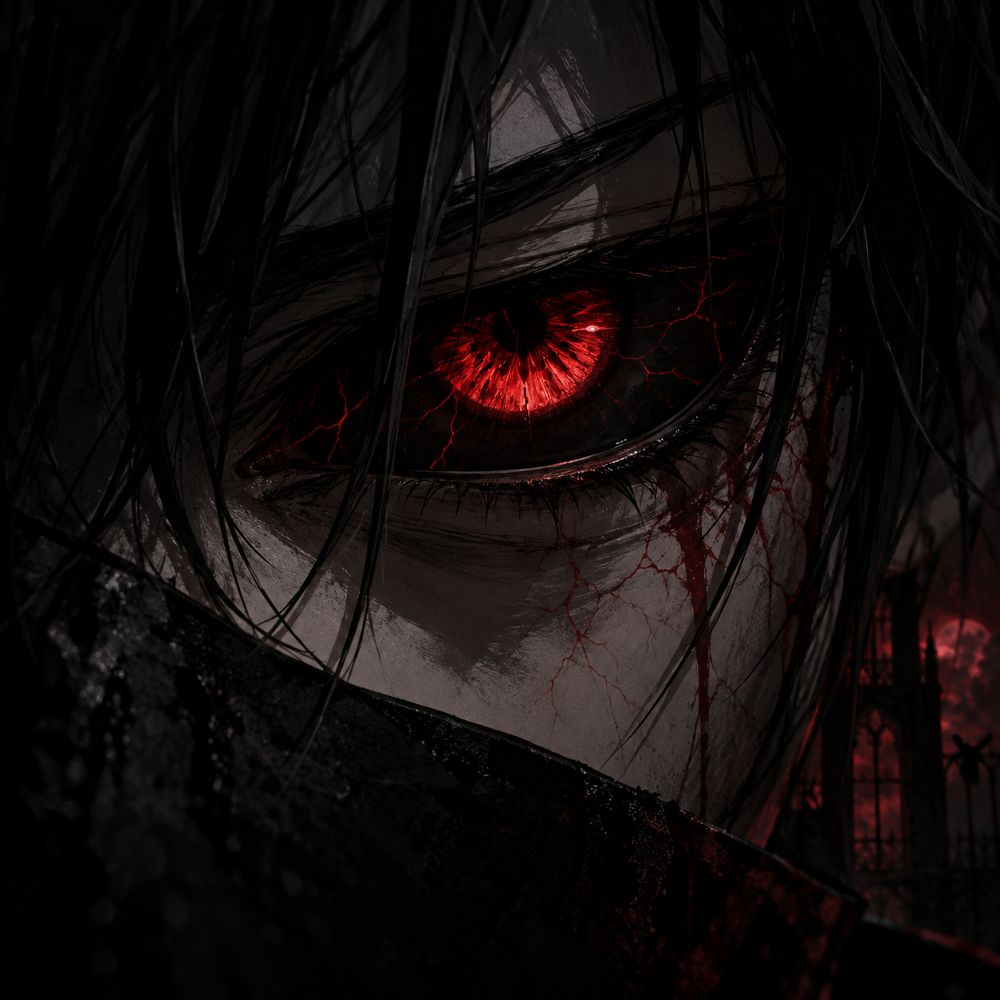

Sobre mim
Um espaço para registrar o que sinto, penso e vivo. Não é um diário tradicional, mas um lugar onde coloco em palavras tudo aquilo que faz sentido pra mim.
“Talvez escrever seja a única forma— RUNA
que encontrei de existir em paz.”